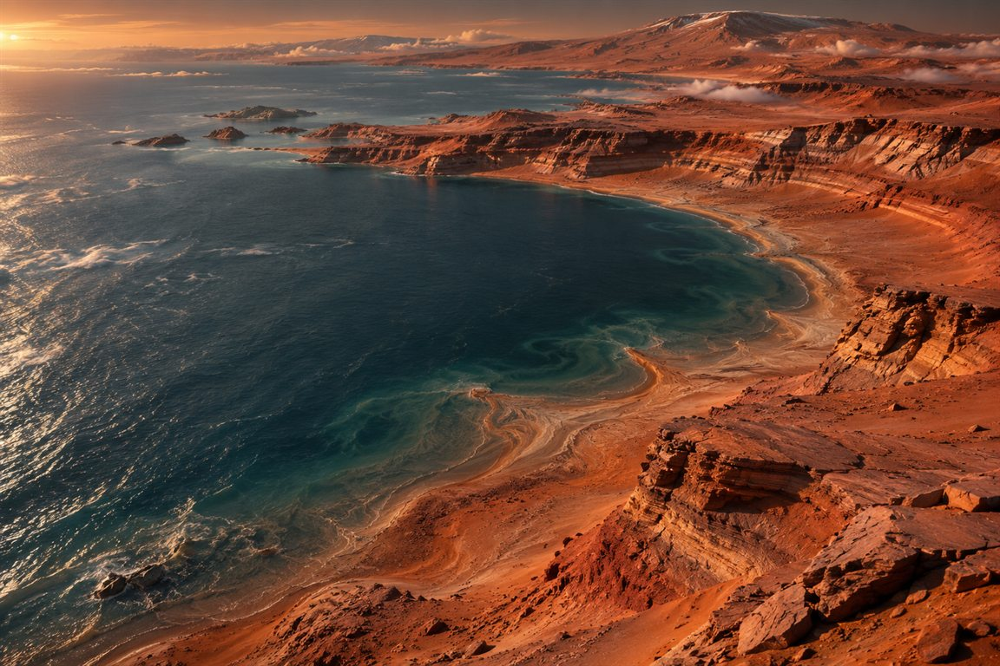

Ancient Ocean on Mars: Evidence vs Open Debate
Could an ocean once have occupied Mars’s northern lowlands? This dossier reviews what supports the hypothesis and which parts of the shoreline and climate story are still debated.

On this page
Summary
Within the Mars package, this is the note that goes up one step compared to there was water. The hypothesis here is no longer just paleolakes or local rivers, but the possibility of an ancient ocean in the northern hemisphere. The real interest of the paper and the Caltech summary is that they try to strengthen the hypothesis with a more robust geomorphological signature than the old isolated coastlines: a topographic band comparable to a continental shelf or bathtub ring.
What this font pack actually contains
- paper in Nature focused on Martian topography and paleogeography
- Caltech institutional brief explaining why the new signal matters
- reinterpretation of the old Martian shorelines debate
- connection between that broad signal and other markers such as deltas or ancient river networks
The strong idea of the paper
The important conceptual change is this:
- Before, much of the debate depended on detecting specific costs that were difficult to reconcile
- the focus now shifts to a regional topographic band more compatible with an ancient continental shelf/oceanic edge
That matters because it reduces dependence on a perfect, continuous coastline on a planet that later suffered deformation, erosion, volcanism and impacts.
What makes this hypothesis more serious?
1) It does not rest only on a single beach line
The old objections to the Martian shorelines were based on differences in elevation that were difficult to explain if everything was a stable coast. The new reading attempts to overcome this problem with a broader and more structural signal.
2) It intersects with other hydrological landscapes
Deltas, valleys and other signs of water circulation become more interesting if they fit with a coherent ocean paleogeography in the north.
3) It implies duration, not just instant episodes
If the signature indeed corresponds to a continental shelf, the hypothesis points to a relatively persistent body of water, not just a brief flood or scattered puddles.
What's still open
exact extension
It is not yet clear how much that ocean covered or whether it was continuous throughout the proposed region.
actual duration
Millions of years sounds strong, but the effective duration and associated climate stability still depend on multiple inferences, not a direct clock.
Water status
Not every signal compatible with paleo-ocean forces us to imagine a temperate sea like Earth. It may have varied greatly in temperature, salinity, depth and stability.
Tectonic/volcanic/deformational history
Part of the debate remains whether later processes altered the terrain so much that today we see a signature mixed between original signal and subsequent geological rewriting.
Practical reading table
| Layer | What it holds | Useful level |
|---|---|---|
| Ancient water on Mars | very likely | high |
| Ancient coastal/marine environments in the north | plausible and reinforced | medium-high |
| Stable large-scale ocean already demonstrated without discussion | not yet | medium |
| Ocean = life/civilization | illegitimate jump | low |
Why it matters within X Files
- because it is one of the few routes where
ancient Marstouches relatively strong scientific evidence - because it reduces the temptation to turn the entire Mars subdomain into pure pareidolia
- because it offers a serious basis for talking about habitability, paleogeography and complex conditions without resorting to folklore
- because it forces us to better distinguish between environmentally rich planet and planet with engineering or civilization
Critical reading X Files
The most solid
- The discussion is no longer whether Mars could have had water at all.
- The oceanic hypothesis has more serious support than it did years ago.
- the debate is strong enough to deserve its own node within the wiki
The easiest thing to overextend
- convert
signature compatible with an oceantoproven global ocean - convert
potencial de habitabilidadtovida compleja - convert
rich hydrological historytoarchitectural Mars
Relationship to other package notes
- Ancient Water on Mars and Climate Loss sets the general climatic basis
- Mars Canals: Schiaparelli, Lowell, and the Interpretive Error shows how poor reading can be culturally deformed
- Face on Mars: Official Image Reanalysis serves as a contrast to visual pareidolia
- Mars X Files: Anomalies vs Official Readings is the bridge node that decides what remains on the science side, what remains on the anomaly side, and what remains on the myth side.
Operating rule
The best reading of this note is:
- yes: there is serious reason to treat ancient Mars as a world with complex hydrology
- not yet: no complete closure on ocean size, duration and geometry
- no: this line does not by itself validate theories of ruins, artificial canals or lost civilization
Related
Ancient Water on Mars and Climate Loss Mars X Files: Anomalies vs Official Readings Mars Canals: Schiaparelli, Lowell, and the Interpretive Error Face on Mars: Official Image Reanalysis Cydonia: Martian Mystery Region Research map Archive home